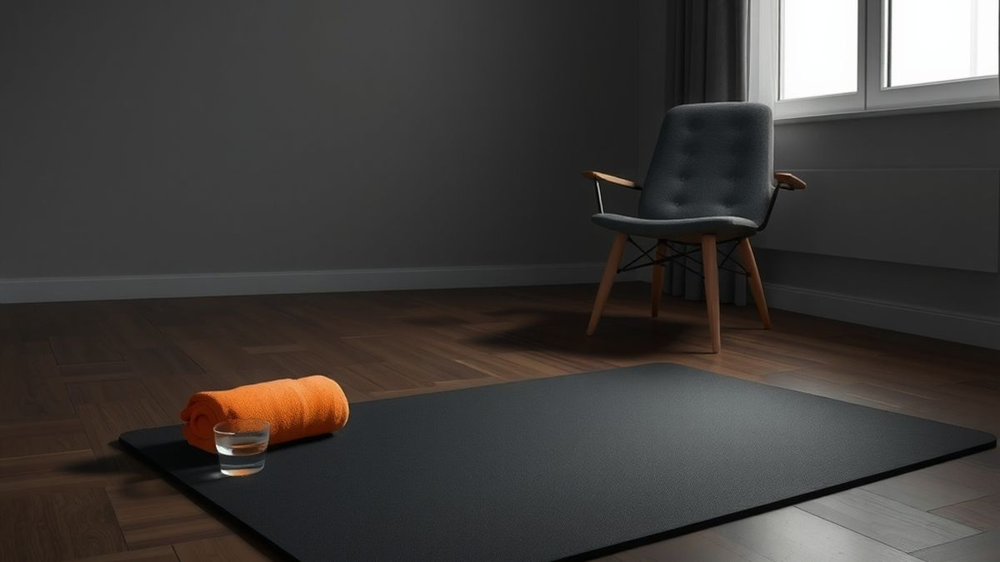

The 100-Rep Method: Can Bodyweight Build Muscle?
The 100-rep method: one exercise, 100 reps, as few sets as it takes. Why it can build muscle without a gym, the honest limits, and a beginner version.


TL;DR
- The 100-rep method: one exercise, 100 good reps, as few sets as it takes, rest as needed. Next time, fewer sets.
- It can build muscle because the sets end close to failure. Research finds similar growth from heavy sets of 8–12 and light sets of 25–35 when sets are hard; heavy loads still win for max strength.
- Pick a variation you can do 10–25 times. Too easy (60+ reps) and it does little; make the move harder, not the number bigger.
- Beginners: 50 reps, easier variations, stop a rep or two short of failure, twice a week.
- Stop for sharp or joint pain, and check with a doctor first if you have heart, joint or pregnancy concerns.
No gym. No dumbbells. Twenty minutes before dinner and a floor.
You drop and do push-ups until you can't. Fourteen. You rest, you do nine. Then seven, six, six, five. You've been at it for ten minutes and you're at 47.
The question in your head is the one everyone asks: is this actually doing anything, or am I just getting tired?
That's the whole point of the 100-rep method. Pick one exercise, do 100 reps of it in as few sets as you can, rest as long as you need between sets, and next time try to finish in fewer sets. It's been around in gyms for years (some call it the Centurion method), and Men's Health recently pitched a bodyweight version for people with no equipment.
Short answer: yes, it can build muscle. Not because 100 is a magic number. Because the last 50 reps are hard. Here's the research, the rules, and how to scale it if you can't do ten push-ups yet.
The 100-rep method in one paragraph
One exercise. One target: 100 good reps. Go until your form starts to break, rest a minute or two, go again. Keep a running total on paper. When you hit 100, you're done for that exercise. Write down how many sets it took. Next session, beat that number of sets, not the number of reps.
That's it. No circuits, no timers, no app required. Which is exactly why people like it.
What makes it different from the other "lots of reps" ideas on this blog:
- Grease the groove is many easy sets spread across the day, always far from failure. It builds skill and strength in one move. The 100-rep method is the opposite: one session, sets taken close to failure.
- The "100 push-ups a day" challenge is daily volume, every day for a month. The 100-rep method is a session you do two or three times a week, with rest days in between.
Can bodyweight build muscle? What the research says
For years, the gym rule was simple: heavy weights for 8–12 reps build muscle, light weights for high reps build "endurance." The research since then has mostly broken that rule, with one important condition.
In a 2015 trial, Brad Schoenfeld and colleagues split 18 young men with lifting experience into two groups. One did 8–12 reps per set with heavy weights; the other did 25–35 reps with light weights. Every set went to failure, three times a week for eight weeks. Both groups grew their arm and thigh muscles by similar amounts. The heavy group gained more squat strength (about 20% vs 9%), and the light group gained more muscular endurance.
A 2017 meta-analysis by the same group pooled 21 studies comparing light loads (60% of your max or less) with heavier ones, all with sets taken to failure. Muscle growth was similar across the range. Gains in maximal strength were bigger with heavy loads.
So there's the condition: the sets have to end close to failure. A 2024 series of meta-regressions in Sports Medicine (Robinson and colleagues) found that muscle growth went up as sets ended closer to failure, while strength gains looked similar across a wide range. Ten easy push-ups when you could do thirty is practice. The last few slow, shaky reps of a set are the part that tells the muscle to grow.
And there's a floor. In a 2018 trial (Lasevicius and colleagues, 30 men, 12 weeks), training at 20% of max was the weakest condition for size and strength, while 40%, 60% and 80% all worked. Translation for bodyweight: if an exercise is so easy you could do 60 in a row, you're not getting much from it. Make the exercise harder, not the number bigger.
And bodyweight specifically?
There's no trial of the 100-rep method itself. But push-ups have been tested against the bench press. In a small 2017 trial, 18 men did either bench press or push-ups at a matched load twice a week for eight weeks, and both groups gained similar chest muscle thickness and strength. A 2018 trial of progressive push-up variations found bench press strength gains similar to bench training over four weeks, though four weeks was too short for either group to show muscle growth. Small studies, mostly young men, but they point the same way: your body weight is a real load if you use the right variation.
Men's Health Australia's write-up of the Centurion version makes the same point honestly: it's a useful tool when you're short on time or kit, not something better than a well-built strength plan.
How to do a 100 rep workout at home
Pick one to three exercises per session. One is plenty to start.
- Warm up for three minutes. Arm circles, a few easy squats, ten wall push-ups.
- Pick a variation you can do 10–25 times in a row. This is the most important step. Fewer than about 8 and 100 reps becomes a slog of singles. More than about 30 and the sets aren't hard enough. See the table below.
- Set one: go until your form starts to slip or you have maybe one or two reps left. Stop there. Write the number down.
- Rest 60–90 seconds, or until your breathing settles.
- Repeat, adding to your running total, until you hit 100.
- Write down the number of sets. That's your score.
- Next time, aim for one fewer set. When you can do 100 in four sets or fewer, move to a harder variation and start again.

Pick the right variation
| Exercise | Easier | Standard | Harder |
|---|---|---|---|
| Push-up | Hands on a counter or bed | Floor push-up | Feet on a chair, or 3-second lowering |
| Squat | Sit down to a chair and stand | Bodyweight squat | Split squat, back foot on the floor |
| Lunge | Reverse lunge holding a counter | Reverse lunge | Split squat with back foot on a chair |
| Row | Lean back holding a door frame | Row under a sturdy table | Same row with feet raised |
| Glute bridge | Two-leg bridge | Bridge with a 2-second hold at the top | Single-leg bridge |
For a balanced session, pair something that pushes (push-ups) with something for legs (squats or lunges) and something that pulls (rows). The US Physical Activity Guidelines recommend strength work on at least two days a week for all major muscle groups, and push-ups alone don't cover your back or legs.
Not sure how many you can do? Start with the test set in How Many Push-Ups Should You Do a Day?, then pick your variation from that number.
Who the 100-rep method is for (and who should scale down)
It suits you if you have no equipment, you have 15–25 minutes, and you can already do at least 8–10 good reps of your chosen move. It's also a decent way to make a light home workout harder without buying anything.
Scale it down if you're new to exercise or coming back after a long break. The beginner version:
- 50 reps, not 100. Same rules, half the total. Move to 75, then 100, over a few weeks.
- Use the easier column. Counter or knee push-ups and chair squats are not cheating. They put you in the rep range where the sets are hard enough to count.
- Stop one or two reps short of failure, not at total failure. You still get most of the benefit, with less soreness and safer form.
- Twice a week, with at least a day between sessions.
If you can't do a single push-up yet, start with the 4-week first push-up plan and use 100 counter push-ups as your session instead.
Stop or check with a doctor first if you have a heart condition, high blood pressure, a joint injury, are pregnant, or haven't exercised in a long time. During a session, muscle burn and shaking are normal. Sharp pain, joint pain, dizziness or chest pain are not: stop. Soreness that lasts more than a few days means the session was too big; drop the total next time.
Questions people ask
How often should you do the 100-rep method?
Two or three times a week per exercise, with a rest day between. Sets close to failure need recovery, which is why this isn't an every-day plan. On the days in between, a walk or a few easy sets are fine.
Is 100 reps better than 3 sets of 10?
Not by itself. If your three sets of ten each end near failure, you're getting a similar signal. The 100-rep method just makes sure you do enough hard sets, and gives you a simple score to beat.
Will it make me stronger, or just better at reps?
Mostly the second, with some of the first. High-rep work builds muscle and endurance; the research consistently finds heavier loads build more maximal strength. Moving to harder variations (feet raised, single-leg) is how bodyweight training closes some of that gap.
The hard part isn't rep 100. It's set one.
Once you're on the floor and counting, finishing is surprisingly doable. The session that never happens is the one you meant to start after "one more video."
That's the moment Rep Rot is built for. It locks the apps you lose hours to until you get up and move: hit your limit, and the app stays locked until you do a set of push-ups, squats or sit-ups, counted by your iPhone's camera. It won't run your 100-rep session for you; keep that tally on paper. But the set that unlocks your phone can be set one.

Real movement, counted right on your phone. No faking it. Rep Rot has a free plan and a 7-day Pro trial, and it's in testing now: email help@reprotapp.com for early access.
Sources: Men's Health UK, the 100-rep bodyweight method; Men's Health Australia, "How the Centurion Method helps build muscle with light weights"; Schoenfeld BJ et al., "Effects of low- vs. high-load resistance training on muscle strength and hypertrophy in well-trained men", Journal of Strength and Conditioning Research (2015); Schoenfeld BJ, Grgic J, Ogborn D, Krieger JW, "Strength and hypertrophy adaptations between low- vs. high-load resistance training: a systematic review and meta-analysis", Journal of Strength and Conditioning Research (2017); Robinson ZP et al., "Exploring the dose–response relationship between estimated resistance training proximity to failure, strength gain, and muscle hypertrophy", Sports Medicine (2024); Lasevicius T et al., "Effects of different intensities of resistance training with equated volume load on muscle strength and hypertrophy", European Journal of Sport Science (2018); Kikuchi N, Nakazato K, "Low-load bench press and push-up induce similar muscle hypertrophy and strength gain", Journal of Exercise Science & Fitness (2017); Kotarsky CJ et al., "Effect of progressive calisthenic push-up training on muscle strength and thickness", Journal of Strength and Conditioning Research (2018); Physical Activity Guidelines for Americans, 2nd edition (2018).